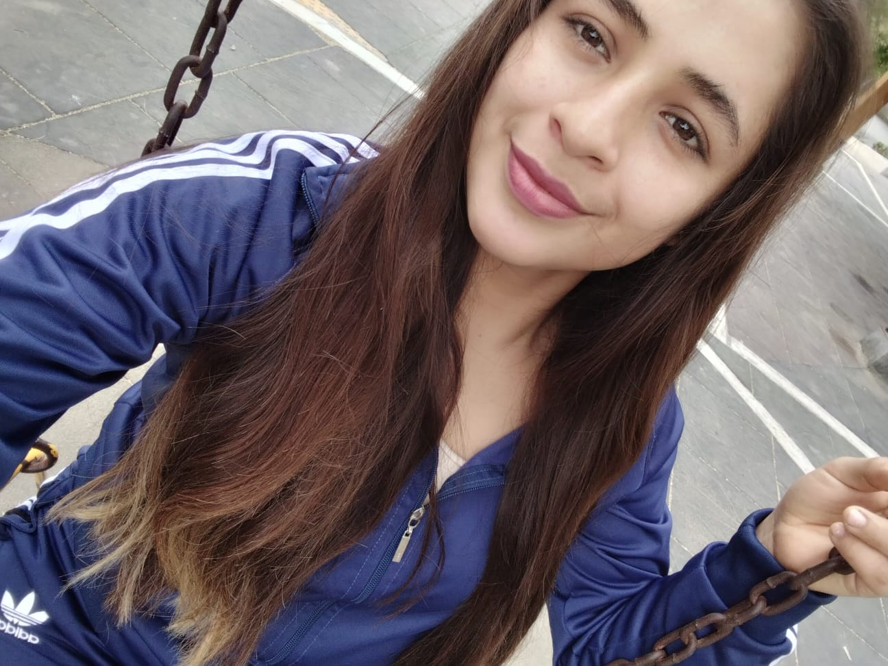
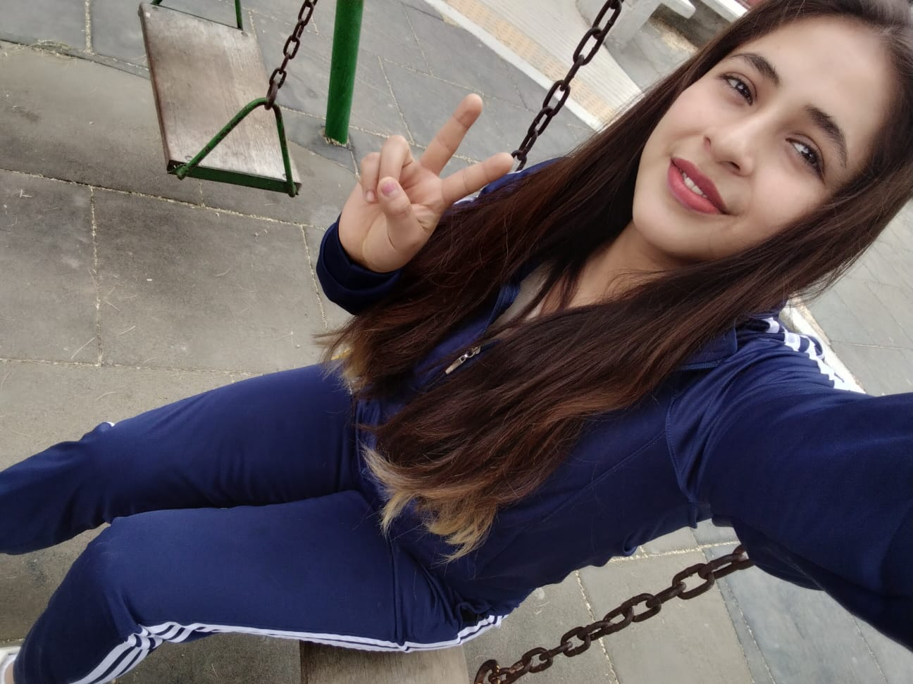

Toca la carta para leerla ❤
✦Para la persona más especial de mi vida✦

Que hormsa te vez deberas, preciosa
Hoy quiero regalarte algo más valioso que cualquier cosa que pueda envolver: mis palabras, mis recuerdos contigo, y todo el tiempo que hemos compartido.
Feliz cumpleaños. Sé que ahora mismo no puedo estar a tu lado para darte esos abrazotes fuertes que te mereces, porque estás junto a tus papás y a tu hijita, pero no quería dejar pasar la oportunidad de decirte todo esto con el mismo cariño de siempre. Me alegra tanto que puedas disfrutar de ese tiempo con ellos antes de comenzar la universidad; te lo ganaste, y sé lo mucho que significa para ti estar cerca de tu pequeña en estos días. Aprovecho también para recordarte por qué ocupas un lugar tan grande en mi vida.
Eres esa persona importante que está conmigo en las buenas y en las malas, la que no suelta mi mano ni cuando todo se complica. Eso no lo encuentra cualquiera, y yo lo encontré en ti. Por eso me encanta lo cardiaca que eres, lo tierna, lo amorosa; me fascina cómo sacas fuerzas hasta de donde no hay, cómo enfrentas cada reto sin dejar de sonreír, y cómo, aun con todo lo que cargas encima, siempre guardas un espacio para las personas que quieres. Me encantan tus ojitos, y sobre todo esa sonrisa que sin darte cuenta se convirtió en uno de mis lugares favoritos del mundo.
Y hablando de cariño, admiro muchísimo la mamá que eres. Verte cuidar, proteger y amar a tu hijita como lo haces me muestra el tipo de mujer fuerte y entregada que eres. No cualquiera logra lo que tú logras cada día, y eso también forma parte de por qué te aprecio tanto.
Justo por eso, ahora que inicias este nuevo capítulo con la universidad, quiero que tengas algo claro: contarás con mi apoyo en todo momento. En los días fáciles y en los complicados, en tus logros y en tus tropiezos, en tus metas y en tus dudas. No estarás sola en esto; yo estaré ahí, alentándote, celebrando cada avance a tu lado y sosteniéndote cuando haga falta. Confía en que, pase lo que pase, puedes contar conmigo.
Que este nuevo ciclo de tu vida te llene de todo lo bueno que mereces, que es muchísimo. Mientras tanto, disfruta cada instante con tus papás y, sobre todo, con tu hijita; dale muchos abrazos de mi parte, y comienza esta etapa con toda la fuerza y el entusiasmo que te caracterizan.
Feliz cumpleaños, mi niña bonita. Te quiero muchísimo, con todo lo que soy.